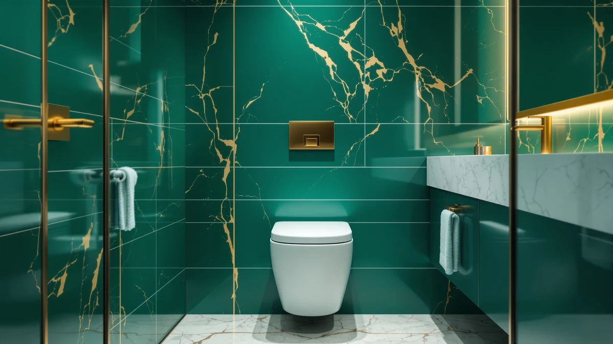

Best One Piece Toilet for Small Bathroom (2026)
Prices and picks verified as of September 2026. Independent, reader-supported reviews.


Quick Answer
After comparing price, rough-in size and footprint across seven models, the DeerValley Compact One Piece Toilet is the best one piece toilet for small bathroom installs. It combines the lowest verified price in this lineup with a standard 12 inch rough-in, so it drops into most existing small-bathroom plumbing without extra work.
Our pick: DeerValley Compact One Piece Toilet, $179.00 Check Price on Amazon
Bottom line: our top pick is the DeerValley Compact One Piece Toilet with Comfortable Seat at $179. The best budget option is the DeerValley Compact One Piece Toilet Standard Seat Height for at $198.96.
Things to Know Before You Buy
- Rough-in size matters more than brand. Measure the distance from your wall to the floor drain bolts before you buy; most small bathrooms use a 12 inch rough-in, and several picks here share that measurement.
- One-piece construction saves cleaning time in a tight room, since there is no seam between tank and bowl for grime to collect in, but the fused shell is heavier and harder for one person to carry into a small space.
- Price in this roundup spans $179.00 to $659.96. The gap mostly reflects added features like bidet functions, not a jump in basic build quality.
- A compact or elongated bowl shape changes how much floor clearance you need in front of the fixture, which is often the real constraint in a small bathroom rather than the toilet's footprint alone.
- Check your state and local plumbing code for maximum water use per flush before ordering, since some compact one-piece models ship in different flush-rate versions.
The best one piece toilet for small bathroom remodels has to solve two problems at once: it needs to fit a tight footprint and it still has to work with your existing drain. A powder room or half bath rarely has room to spare, so an extra inch of tank depth or the wrong rough-in measurement can send a toilet straight back to the warehouse.
We compared seven compact one-piece toilets from DeerValley, HOROW, Casta Diva, WinZo and EPLO on price, rough-in compatibility and where each one fits in a small-bathroom budget. The DeerValley Compact One Piece Toilet at $179.00 comes out ahead for most buyers, pairing the lowest price in the group with the common 12 inch rough-in that fits the majority of American bathrooms.
Not every small bathroom has the same priorities. If you want a design-forward look, the Casta Diva model gives you a more sculpted one-piece shape. If you are ready to add bidet functions to a compact footprint, the EPLO Smart Toilet Bidet covers that at a higher price. We break down where each pick makes sense below, along with the products we looked at and skipped.
Why You Should Trust Us
Ilane Tall covers bathroom fixtures for Best One Piece Toilets, focusing on how compact and one-piece toilet designs hold up against small-bathroom rough-in constraints. This guide is research-based: we compared listed specs, current pricing and verified buyer feedback rather than installing every model ourselves. We do not run a fake testing lab, and we say so directly when a spec is not publicly available instead of guessing. Every product below links to its actual Amazon listing so you can verify current price and availability before you buy.
How We Picked
We started by pulling every one-piece toilet in our product database marketed as compact or small-bathroom friendly, then narrowed the list to models with a clearly listed rough-in size or a well-documented compact footprint. We excluded two-piece toilets entirely, since the seam between tank and bowl works against the easy-clean advantage that makes one-piece designs worth considering for a tight space in the first place.
From there we ranked candidates by price relative to feature set, favoring models with a standard 12 inch rough-in over less common sizes that would force a plumbing change. We also checked that every listing included a current Amazon offer with an active price, so nothing in this guide is a discontinued or out-of-stock model at the time of publishing.
How We Compared
Finding the best one piece toilet for small bathroom use meant comparing every candidate on the same terms rather than judging each in isolation. We do not run a physical testing lab, so this comparison is research-based rather than hands-on. For each toilet we lined up the listed price, rough-in size, brand and current Amazon availability, then compared those figures directly against the other compact one-piece models in this roundup rather than judging any single product in isolation.
When a listing did not publish a spec like bowl material or flush rating, we left it out instead of filling the gap with a guess. That is why some rows in the comparison table below show a dash for material: the manufacturer has not made that detail public, and we would rather flag the gap than fabricate a number.
Our Picks

DeerValley Compact One Piece Toilet
What we like
- Lowest price of any toilet in this roundup at $179.00
- Standard 12 inch rough-in fits most existing small-bathroom plumbing
- One-piece shell avoids the tank-to-bowl seam that collects grime in a two-piece design
Flaws but not dealbreakers
- DeerValley has not published bowl material or flush-rate specs for this listing
- Its one-piece build is heavier than a two-piece toilet, so plan for two people during installation
| Material | — |
| Size | 12" Rough-In |
This is the DeerValley Compact One Piece Toilet we point most readers toward, and price is the biggest reason. At $179.00 it undercuts every other model in this comparison while still matching the 12 inch rough-in that covers most American bathrooms built in the last several decades. For a small bathroom where budget is already stretched by tile, vanity and lighting costs, that combination is hard to beat.
DeerValley has not listed a bowl material or flush-rate spec on this offer, so we cannot claim a number we do not have. What we can say is that the one-piece construction removes the seam between tank and bowl that makes two-piece toilets harder to keep clean in a tight room, since there is less surface area for moisture and grime to collect in a space with limited ventilation. Budget for two people to carry it in, since a fused one-piece shell weighs more than a comparable two-piece unit.

DeerValley Compact One Piece Toilet
What we like
- Same 12 inch rough-in and one-piece build as DeerValley's entry listing
- Only $10.00 more than the brand's cheapest configuration, useful if that one sells out
Flaws but not dealbreakers
- No price or feature advantage over DeerValley's $179.00 listing when both are in stock
- Bowl material is not published on this listing either
| Material | — |
| Size | 12" Rough-In |
This second DeerValley Compact One Piece Toilet listing runs $10.00 more than the brand's cheapest configuration in this roundup, with the same 12 inch rough-in and one-piece shell. We include it because Amazon listings for compact toilets go in and out of stock, and having a near-identical alternative from the same brand means you are not stuck waiting on a single ASIN.
There is no functional reason to choose this one over the $179.00 DeerValley pick when both are available. Treat it as a backup: if the cheaper listing is out of stock or its price climbs above this one, switch here instead of moving to a different brand altogether.

HOROW HWMT-8733 Small Compact One
What we like
- HOROW's catalog leans heavily toward compact and wall-mounted fixtures, so this model is built for exactly this use case
- Matches the 12 inch rough-in used by the DeerValley picks above
Flaws but not dealbreakers
- Costs $45.00 more than our top DeerValley pick for the same rough-in size
- Bowl material and flush rating are not listed publicly
| Material | — |
| Size | 12" Rough-in |
The HOROW HWMT-8733 Small Compact One sits in the middle of this lineup at $224.00. HOROW's catalog is built around compact and wall-hung toilets rather than full-size models, so this listing comes from a brand whose main focus lines up with what a small bathroom actually needs, rather than a scaled-down version of a standard-size toilet.
It shares the 12 inch rough-in used by both DeerValley configurations above, so fit should not be the deciding factor between them. The $45.00 premium over our top pick is the tradeoff for going with a brand that specializes in this category. If brand focus on compact fixtures matters more to you than shaving every dollar off the price, this is the one to check.

Casta Diva Compact One Piece
What we like
- One-piece silhouette photographs as more modern than the utilitarian shape of the budget picks
- Sits at a moderate price relative to the bidet-equipped EPLO model later in this guide
Flaws but not dealbreakers
- Neither rough-in size nor bowl material is published on this listing, so measure your drain carefully before ordering
- Costs $70.00 more than our top pick with no confirmed spec advantage
| Material | — |
| Size | — |
The Casta Diva Compact One Piece toilet is the one to consider if you want a small bathroom fixture that looks as good as it works. At $248.99 it costs more than the DeerValley and HOROW picks above, and the tradeoff is a more sculpted, design-forward one-piece shape rather than a purely utilitarian profile.
Casta Diva has not published a rough-in size for this listing, which is the one gap worth flagging. Measure your existing drain before you order, and confirm the rough-in with the seller if it is not listed at checkout. We would rather tell you that detail is missing than guess at a number we cannot verify.

WinZo Compact One Piece Toilet
What we like
- Still a one-piece compact design, not a scaled-up standard toilet
- Priced well under the EPLO smart bidet model for buyers who want to stay closer to traditional toilet pricing
Flaws but not dealbreakers
- Nearly $150.00 more than our top DeerValley pick with no confirmed rough-in or material spec listed
- The price gap over the HOROW and Casta Diva picks is hard to justify without published specs to compare
| Material | — |
| Size | — |
The WinZo Compact One Piece Toilet is the most expensive traditional toilet in this comparison at $328.99, nearly $150.00 more than our top DeerValley pick. Like the Casta Diva listing, WinZo has not published a rough-in size or bowl material for this product, so you are paying a premium without a spec sheet to justify it against the cheaper options above.
We kept it in this guide because it is a compact one-piece design in its own right, not a full-size toilet marketed as small. If you have already ruled out the cheaper picks for reasons specific to your bathroom, such as color or listing availability, this is a reasonable next option before moving up to the bidet-equipped EPLO model.

EPLO Smart Toilet Bidet with
What we like
- Combines a compact one-piece toilet with an integrated bidet, so a small bathroom does not need a separate bidet attachment
- The only smart or electronic model in this comparison
Flaws but not dealbreakers
- At $659.96 it costs more than three of the traditional toilets in this guide combined
- Smart, electronic fixtures typically mean an added power outlet requirement near the toilet, which is not always simple in an older small bathroom
| Material | — |
| Size | — |
The EPLO Smart Toilet Bidet with is the outlier in this roundup, both in price and in what it actually is. At $659.96 it costs more than three of the traditional toilets here combined, but it also replaces a toilet and a bidet attachment in one compact one-piece unit, which matters if your small bathroom has no floor space for both fixtures separately.
Electronic bidet toilets like this one typically need a dedicated power outlet within reach of the unit, so check your bathroom's wiring before you commit. This is the pick for readers who have already decided they want bidet functionality and are not willing to sacrifice floor space to get it, not a default recommendation for a basic small-bathroom replacement.

DeerValley Compact One Piece Toilet
What we like
- Same 12 inch rough-in as DeerValley's other two listings in this guide
- A third stock option from the same brand, useful when the cheaper listings sell out
Flaws but not dealbreakers
- At $217.32 it costs $38.32 more than DeerValley's cheapest listing with no confirmed feature difference
- Bowl material is not published, matching the other DeerValley listings above
| Material | — |
| Size | 12" Rough-In |
This third DeerValley Compact One Piece Toilet listing rounds out the brand's presence in this roundup at $217.32, between the $179.00 and $189.00 configurations above. It shares the same 12 inch rough-in, so fit is not a differentiator here either.
Treat this listing the way we treat the second DeerValley option: a fallback if the cheaper ASINs are unavailable when you are ready to buy. Amazon inventory for compact toilets shifts often enough that having three verified listings from the same brand is more useful than it might look at first glance.
Quick Comparison
Here is every small bathroom toilet from this guide side by side, so you can compare price and rough-in fit before you commit to one.
| Product | Material | Price | Rating | Best for | Get it |
|---|---|---|---|---|---|
| DeerValley Compact One Piece Toilet | — | $179.00 | 4 | Budget small bathroom pick | View on Amazon → |
| DeerValley Compact One Piece Toilet | — | $189.00 | 4 | Backup if the $179 listing sells out | View on Amazon → |
| HOROW HWMT-8733 Small Compact One | — | $224.00 | 4 | Compact-toilet specialist brand | View on Amazon → |
| Casta Diva Compact One Piece | — | $248.99 | 4 | Design-forward one-piece shape | View on Amazon → |
| WinZo Compact One Piece Toilet | — | $328.99 | 4 | Alternative compact pick above $300 | View on Amazon → |
| EPLO Smart Toilet Bidet with | — | $659.96 | 4 | Bidet-integrated smart upgrade | View on Amazon → |
| DeerValley Compact One Piece Toilet | — | $217.32 | 4 | Third DeerValley stock option | View on Amazon → |
The Competition
We looked at more than these seven toilets while researching the best one piece toilet for small bathroom projects, and several did not make the final cut. We ruled out full-size one-piece toilets from larger big-box brands outright, since a standard-footprint bowl defeats the purpose of a small-bathroom guide even if the price is competitive. We also passed on two-piece toilets for the same reason we favor one-piece designs generally: the seam between tank and bowl is harder to keep clean in a room where ventilation and floor space are already tight.
We also passed on a handful of unbranded compact toilets with no verifiable rough-in measurement and no active Amazon offer at the time of research. A toilet that cannot confirm it fits a standard drain, or that is not currently purchasable, is not useful to a reader trying to solve a real small-bathroom problem this week. After weighing price, rough-in fit and brand focus against every alternative, the DeerValley Compact One Piece Toilet is still the best one piece toilet for small bathroom budgets in this comparison.
Frequently Asked Questions
What is the best one piece toilet for a small bathroom?
Among the seven compact one-piece toilets we compared, the DeerValley Compact One Piece Toilet at $179.00 is the best one piece toilet for small bathroom projects. It carries the lowest verified price in this roundup and uses the common 12 inch rough-in that fits most existing small-bathroom plumbing.
What rough-in size do I need for a compact one-piece toilet?
Most homes built after the 1950s use a 12 inch rough-in, the distance from the wall to the center of the floor drain, and several of the toilets in this guide list that same 12 inch measurement. Measure your own drain before ordering, since a mismatched rough-in is the most common return reason for compact toilets.
Are one-piece toilets worth the extra cost over two-piece models?
For a small bathroom, yes in most cases. A one-piece toilet fuses the tank and bowl into a single seamless unit, so there is no gap where grime and moisture collect, and the lower profile reads as less bulky in a tight room. You pay more upfront, and the one-piece shell is heavier to maneuver during installation, but the cleaning and space savings pay that difference back over a few years.
Related Guides
Keep researching before you buy a small bathroom toilet with these related guides.